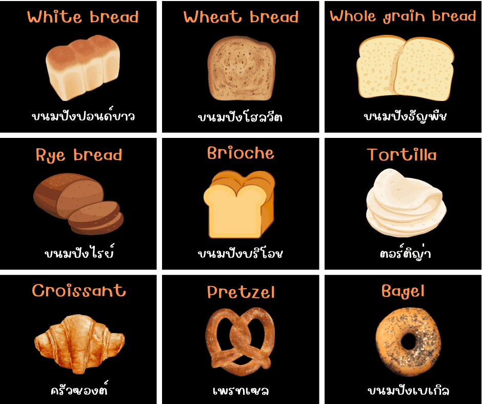

ขนมปัง
ขนมปัง เป็นอาหารที่ทำจากเเป้งสาลีที่ผสมกับน้ำและยีสต์ หรือผงฟู นอกจากนี้ยังมีการใช้ส่วนผสมอื่น ๆ เพื่อแต่งสี รสชาติและกลิ่น แตกต่างกันไปตามแต่ละประเภทของขนมปัง และ แต่ละประเทศที่ทำ
โดยนำส่วนผสมมาตีให้เข้ากันและนำไปอบ ขนมปังมีหลายประเภท เช่น ขนมปังฝรั่งเศษ หรือแม้กระทั่งเพรตเซิล ของขึ้นชื่อประเทศเยอรมนี เป็นต้น
ชาวสวิสที่อาศัยอยู่ตามทะเลสาบในยุคหินเป็นผู้ริเริ่มนำเมล็ดข้าวสาลีมาบดโดยใช้ครกหยาบ ๆ ตำ แล้วนำไปผสมน้ำ แล้วนำไปเทลงบนหินร้อนๆเพื่อให้สุก ผลที่ได้คือขนมปังที่ขึ้นฟูโดยไม่ได้ตั้งใจ
ซึ่งค้นพบมากว่า 3,000 ปี ก่อนคริสตกาล ประวัติที่ยอมรับสืบเนื่องกันมาก็คือพวกทาสในสมัยราชวงศ์อียีปต์ ได้ผสมก้อนแป้งที่ลืมทิ้งไว้ลงไปในแป้งที่ผสมเสร็จใหม่ ๆ ผลที่ได้คือแป้งที่เบาและรสชาติดี
